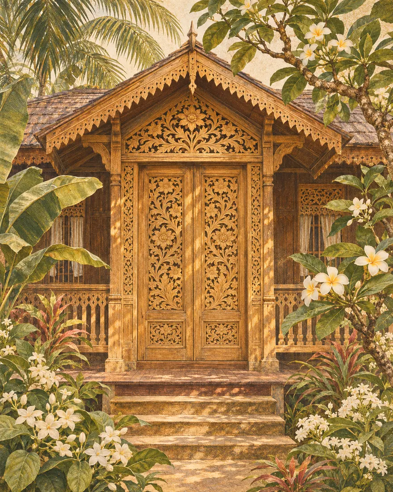

بِسْمِ اللَّهِ الرَّحْمَٰنِ الرَّحِيمِ
Assalamualaikum dan salam sejahtera.
Dengan penuh kesyukuran ke hadrat Ilahi, kami
Encik Azman bin Rahim & Puan Salmah binti Hassan
dengan sukacitanya menjemput Dato’, Datin, tuan, puan, encik dan cik seisi keluarga untuk meraikan perkahwinan puteri dan putera kami bersama pasangan masing-masing.
Nur Alya binti Azman&Muhammad Hakim bin Zulkifli
Muhammad Irfan bin Azman&Nur Maisara binti Farid
Waktu & tempat
Butiran majlis
Masa
11.00 pagi – 4.00 petangWaktu Malaysia
Lokasi
Alida Wedding HallLot 21568, Jalan Pintasan Muar,
Jalan Ismail, 84000 Muar, Johor.
Maklum balas tetamu
Dapatkah anda hadir?
Ini kad contoh. Pilihan anda hanya dipaparkan pada halaman ini.